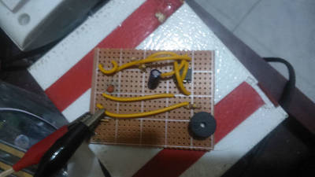

2016-03-10 - Nº 45

Editorial
Aqui está a Newsletter Nº 45 no seu formato habitual. Agora às quintas-feiras. Se gostar da Newsletter partilhe-a!
Todas as Newsletters encontram-se indexadas no link.
Esta Newsletter tem os seguintes tópicos:
No passado fim-de-semana estivemos a montar uma impressora 3D - a ADA. Mais uma aquisição para o altLab.
Esta semana o MIT apresentou um algoritmo designado de Polaris, que permite acelerar até 34% a leitura de páginas Web. Uma outra equipa do MIT e da universidade de Innsbruck apresentou um relatório onde dizem ter desenhado e construído um computador quântico a partir de 5 átomos. O computador que, através de pulsações de laser, usa o algoritmo de Shor a factorizar correctamente o numero 15. O sistema em causa foi desenhado de forma a que à medida que forem acrescentados átomos e lasers ficará maior e mais rápido. Um avanço tremendo para simplificar a factorização de números primos e por em causa os algoritmos de cifra baseados na dificuldade de factorizar este tipo de números. Foi lançada esta semana o Arduino IDE 1.6.8 que além de correcções de bugs trás algumas novas funcionalidades interessantes.
Na Newsletter desta semana apresentamos diversos projetos de maker e na rubrica "Documentação" apresentamos quatro livros (eBooks) que podem ser descarregados livremente e que esta semana são sobre Programação em Python, LaTeX, controlo de versões de ficheiros com o SVN e programação de base de dados defensiva com SQL Server. Falamos igualmente da revista newelectronics de 8 de março.
 João Alves ([email protected])
João Alves ([email protected])
O conteúdo da Newsletter encontra-se sob a licença  Creative Commons Attribution-NonCommercial-ShareAlike 4.0 International License.
Creative Commons Attribution-NonCommercial-ShareAlike 4.0 International License.
Novidades da Semana ^
The beginning of the end for encryption schemes?
"What are the prime factors, or multipliers, for the number 15? Most grade school students know the answer — 3 and 5 — by memory. A larger number, such as 91, may take some pen and paper. An even larger number, say with 232 digits, can (and has) taken scientists two years to factor, using hundreds of classical computers operating in parallel. Because factoring large numbers is so devilishly hard, this “factoring problem” is the basis for many encryption schemes for protecting credit cards, state secrets, and other confidential data. It’s thought that a single quantum computer may easily crack this problem, by using hundreds of atoms, essentially in parallel, to quickly factor huge numbers. In 1994, Peter Shor, the Morss Professor of Applied Mathematics at MIT, came up with a quantum algorithm that calculates the prime factors of a large number, vastly more efficiently than a classical computer. However, the algorithm’s success depends on a computer with a large number of quantum bits. While others have attempted to implement Shor’s algorithm in various quantum systems, none have been able to do so with more than a few quantum bits, in a scalable way. Now, in a paper published today in the journal Science, researchers from MIT and the University of Innsbruck in Austria report that they have designed and built a quantum computer from five atoms in an ion trap. The computer uses laser pulses to carry out Shor’s algorithm on each atom, to correctly factor the number 15. The system is designed in such a way that more atoms and lasers can be added to build a bigger and faster quantum computer, able to factor much larger numbers. The results, they say, represent the first scalable implementation of Shor’s algorithm."
System loads Web pages 34 percent faster by fetching files more effectively
"There are few things more frustrating than a slow-loading Web page. For companies, what’s even worse is what comes after: users abandoning their site in droves. Amazon, for example, estimates that every 100-millisecond delay cuts its profits by 1 percent. To help combat this problem, researchers from MIT’s Computer Science and Artificial Intelligence Laboratory (CSAIL) and Harvard University have developed a system that decreases page-load times by 34 percent. Dubbed “Polaris,” the framework determines how to overlap the downloading of a page's objects, such that the overall page requires less time to load."
-
"Today we are happy to release the Arduino IDE 1.6.8 and updated cores for almost all supported platforms (AVR 1.6.10, SAM 1.6.7, Curie 1.0.5). This new version of Arduino Software adds support for scaling interface for UHD monitors: if the IDE is too small because your display resolution is very high or just because you want it bigger :-) now you can set the scaling factor from the preferences panel. Another improvement is that the IDE now tries harder to remember the last window position when it’s closed and to restore it when it’s opened again. It’s a small improvement that should save some clicks every time the IDE is opened."
Ciência e Tecnologia ^
Rice makes light-driven nanosubmarine
"Though they’re not quite ready for boarding a lá “Fantastic Voyage,” nanoscale submarines created at Rice University are proving themselves seaworthy. Each of the single-molecule, 244-atom submersibles built in the Rice lab of chemist James Tour has a motor powered by ultraviolet light. With each full revolution, the motor’s tail-like propeller moves the sub forward 18 nanometers. And with the motors running at more than a million RPM, that translates into speed. Though the sub’s top speed amounts to less than 1 inch per second, Tour said that’s a breakneck pace on the molecular scale."
-
"As you know, solar cell , is an electrical device that converts the energy of light directly into electricity by the photovoltaic effect, which is a physical and chemical phenomenon. We all have seen those big stripped solar panels on the top of the houses. Though it is for a good cause but still it is somewhat out of place on your house. But now, Michigan State University research team has finally created a truly transparent solar panel — a breakthrough that could soon usher in a world where windows, panes of glass, and even entire buildings could be used to generate solar energy."
Researchers Find New Phase of Carbon, Make Diamond at Room Temperature
"Researchers from North Carolina State University have discovered a new phase of solid carbon, called Q-carbon, which is distinct from the known phases of graphite and diamond. They have also developed a technique for using Q-carbon to make diamond-related structures at room temperature and at ambient atmospheric pressure in air."
ORNL process could be white lightning to electronics industry
"A new era of electronics and even quantum devices could be ushered in with the fabrication of a virtually perfect single layer of “white graphene,” according to researchers at the Department of Energy’s Oak Ridge National Laboratory. The material, technically known as hexagonal boron nitride, features better transparency than its sister, graphene, is chemically inert, or non-reactive, and atomically smooth. It also features high mechanical strength and thermal conductivity. Unlike graphene, however, it is an insulator instead of a conductor of electricity, making it useful as a substrate and the foundation for the electronics in cell phones, laptops, tablets and many other devices."
Photonic 'sintering' may create new solar, electronics manufacturing technologies
"Engineers at Oregon State University have made a fundamental breakthrough in understanding the physics of photonic "sintering," which could lead to many new advances in solar cells, flexible electronics, various types of sensors and other high-tech products printed onto something as simple as a sheet of paper or plastic. Sintering is the fusing of nanoparticles to form a solid, functional thin-film that can be used for many purposes, and the process could have considerable value for new technologies. Photonic sintering has the possible advantage of higher speed and lower cost, compared to other technologies for nanoparticle sintering."
-
"Researchers at Linköping University’s Laboratory of Organic Electronics, Sweden, have developed power paper – a new material with an outstanding ability to store energy. The material consists of nanocellulose and a conductive polymer. The results have been published in Advanced Science. EnergipappretOne sheet, 15 centimetres in diameter and a few tenths of a millimetre thick can store as much as 1 F, which is similar to the supercapacitors currently on the market. The material can be recharged hundreds of times and each charge only takes a few seconds."
Documentação ^
A documentação é parte essencial do processo de aprendizagem e a Internet além de artigos interessantes de explorar também tem alguma documentação em formato PDF interessante de ler. Todos os links aqui apresentados são para conteúdo disponibilizado livremente pelo editor do livro.
Livros
-
"This book describes Python, an open-source general-purpose interpreted programming language. Python has distributions available for Microsoft Windows, Apple Mac OS X, GNU/Linux, BSD, web browser environments (NCLab, Sage) and many other platforms. There are currently three major implementations: the standard implementation written in C, Jython written in Java, and IronPython written in C# for the .NET environment. There are two common versions currently in use: 2.x and 3.x. This book describes primarily version 2, but does at times reference changes in version 3."
-
"This is a guide to the LaTeX markup language. It is intended to form a useful resource for everybody from new users who wish to learn, to old hands who need a quick reference."
Version Control with Subversion For Subversion 1.7
"One of the greatest frustrations in most software projects is version control: the art of managing changes to information. Today's increasingly fast pace of software development--as programmers make small changes to software one day only to undo them the next--has only heightened the problem; consecutive work on code or single-programmer software is a rare sight these days. Without careful attention to version control, concurrent and collaborative work can create more headaches than it solves. This is where Subversion comes into play.Written by members of the Subversion open source development team, Version Control with Subversion introduces the powerful new versioning tool designed to be the successor to the Concurrent Version System or CVS."
Defensive Database Programming
"Resilient T-SQL code is code that is designed to last, and to be safely reused by others. The goal of defensive database programming, the goal of this book, is to help you to produce resilient T-SQL code that robustly and gracefully handles cases of unintended use, and is resilient to common changes to the database environment."
Revistas
-
"New Electronics is a fortnightly magazine focusing on technological innovation, news and the latest developments in the electronics sector. Downloadable as a digital page turner or pdf file, or offered as a hard copy, the New Electronics magazine is available in a format to suit you."
Modelos 3D ^
Com a disponibilidade de ferramentas que permitem dar azo a nossa imaginação na criação de peças 3D e espaços como o thingiverse para as publicar, esta rubrica apresenta alguns modelos selecionados que poderão ser úteis.
3D Print Bed Scraper
Modified print bed scraper
Spiral Characters
It's based on Turtle Spiral Generator. You may change the following parameters to spin out or in characters:
text height diameter symbol spin Give it a try: http://www.thingiverse.com/apps/customizer/run?thing_id=1404251
I use it to create Ball of Characters, such as Ball of PI
Multi-Purpose Customizable Stand / Pen Stand
This is a multipurpose customisable stand with almost infinite possibilities. It can be customized to multiple shapes to anything from a regular pen stand to where your imagination takes you.
Customization options include: Resolution, Height, Radius, Over all Thickness, Spiral Mesh Density, Spiral Thickness and Spiral Angles.
Projetos Maker ^
Diversos Projetos interessantes.
The Great MSP430 Bootloader Swindle
"The MSP430 is a great little micro, and with some proper marketing, it could easily have provided an alternative to the AVR and PIC. However unclear, obfuscating, archaic documentation, spread very thinly over the web has made this little micro the poor relation of the microcontroller world. I write this having just spend a considerable amount of time in February trying to provide an effective solution for programming one of our products, an MSP430 based force gauge, which is being produced by a new supplier."
Recycler 2 lecteurs DVD en Mini Traceur (CNC Plotter) Arduino
"There are many projects to recycle old DVD players in mini CNC plotter (CNC Plotter) based on Arduino. It's a fun project and ideal for beginners with its Arduino but the mechanical construction and especially the pencil holder can be difficult. I propose in this article to make a mini plotter realizing the mechanical elements by 3D printing."
Pan Tilt controlled by Cell Phone
"In this my new project I will introduce to you a Pan-Tilt controlled by Cell Phone. All movements of the cell phone are reproduced in the pan-tilt device via Bluetooth. The construction is very simple using an Arduino R3 (or similar) and two shields over it. This is a demonstration of a design that can go further in new developments and applications."
Speed Controlled RC CAR using (4 CH Motor Driver Controller + Arduino + Bluetooth)

"Hi, As this is my first instructable here, I hope you'll like it and feel free to ask about anything not clear in it. Firstly, I started this project after I wanted to control 4 Motors that requires relatively high power (12Volts, 4 Amperes) for each. After searching for a good shield to supply the motors with the required power, I found this one "4 Channel Motors Driver Controller". I wanted to buy it but I didn't find any simple tutorial for how to use it with Arduino. So I decided to read its datasheet and configure how I will use it with Arduino. Finally, I bought the board and It worked fine. So I decided to write this instructable to ease the process for the next users of the same board. In addition, just to prove the concept, I made a small hardware project which is an RC Car using ARDUINO + BLUETOOTH + 4CH MOTOR DRIVER CONTROLLER."
-
"LED Me Know is a little side project to enhance a front-ender's development environment, but really, it's just an excuse to play around with an arduino. Wouldn't it be cool to have some LEDs connected to an arduino, connected to your development tooling, letting you know when you've broken a test as you code?"
Hardware serial port monitor with WiFi
"The goal of the project is to create a small module that can connect to any hardware serial port and then display serial data on smartphone or PC. "
-
"A small and cheap 5V/400V DC/DC converter can be useful in many DIY projects, e.g GeigerMller counters. I will present here one of such DC/DC converter based on popular MC34063 chip in step-up configuration."
GeigerMuller counter that can work with Arduino or (almost) any evaluation board
"The GeigerMller counter is a relatively simple tool to measure ionizing radiation. To increase sensitivity, construction presented here contains three (instead of one as usually) soviet STS-5 lamps. This is important for measurements of natural sources of (low) radiation like soil, rocks (an article about my trip with GeigerMller counter on Sniezka mountain)."
Control TV With Any Phone (Even phones without IR blaster)
"Do you want to control your TV and several other gadgets that are IR controlled? Ya but my phone doesn't support it because it doesn't have an IR blaster.Don't worry here a gadget that gives IR control to any phone and the thing it needs is bluetooth!! YES!! bluetooth!! The gadget also increases the range of your control!! As it covers the distance range of bluetooth as well as infrared!! It was made in very less budget and requires some components including arduino uno and bluetooth module! Basically the phone sends signal to HC-05 (bluetooth module) and further bluetooth module sends the characters to arduino's serial port and arduino sends particular IR signal decoded from your remote!! It works with all TV remotes!!I etched the circuit on PCB to make it more efficient and useful!! Here 's a demo video of it but I'll publish full tutorial on making it soon.."
-
"Collaborating water and electricity seems as almost common sense as pairing a young Petit Chablis with a spaghetti alla vongole. As an alternative to the several thousand dollar pre-installed branded electronically controlled shower, a few attempts at creating a DIY automated shower have appeared over the years, though, applied with immense exchange of existing components and not best utilizing the newer era of IoT. Here, we have sympathetically married abundantly common pre-existing shower valves with the yet to be released Arduino MKR1000 to create an automated, connected and subsequently more efficient bathing experience."
-
"In my last post Ive described the design and construction of my LED dimmer project. This project here is similar but a bit more involved. It controls RGB LEDs so it can not only change the brightness but also the color of the light. Instead of a simple pot it used a pair of rotary encoders with push buttons. One controls the brightness, pushing its button turns the light on or off. The other changes the color, pushing its button toggles between color and white."
-
"In this Instructable i will show you how to build a Clock out of an ESP8266 Node-MCU v0.9 dev. kit, a 24 Neopixel Ring and some other parts. Sorry for my bad english skills, if there is a problem or a question ask me and i will try to help you."
Personal Security System using Arduino
"Here is just a simple guide on how to create your own mini "security system" using an Arduino. This is just a fun project, please don't actually rely on this device to keep your house secure! This design uses an Arduino, a HC-SRO4 Ultrasonic Sensor, a Buzzer, and some LED's. Ultimately from this tutorial, I hope you learn how to use a buzzer and LED's to display how far away an object is from the ultrasonic sensor."
-
"Ive been thinking about building stuff with FPGAs for a while, and usually get turned away because FPGAs are considerably harder to implement than microcontrollers since they have no on-chip memory. It is necessary to re-program the gates every time they power up, which requires an external flash memory chip. There arent great references online for the DIY community, so I figured Id post how to get this working. Not using dev boards opens a world of opportunities, so Im a proponent of not using Arduinos and their FPGA equivalent for too long (sure, theyre good to get started with, but dont become dependent). Not wanting to screw up an expensive complex board by being a first-timer at putting an FPGA into a circuit, I figured Id build a little test board with the cheapest Spartan 6 you can get (about $10), which comes in a solderable TQFP144 package. Sadly, most high end FPGAs are BGA and therefore quite hard to solder as a DIY project."
-
"Have you worked with ready-made 8x8 LED matrix as displays? They come in various sizes and are quite interesting to work with. A large readily available size is around 60mm x 60mm. However, if you are looking for a much larger ready-made LED matrix, you may be out of luck. For this project, we will be building a single color large LED matrix display which is made up of a few large 8x8 LED matrix modules daisy-chained together. Each of these 8x8 LED matrix modules is around 144mm x 144mm in size."
-
"For this Challenge, I created an Arduino controlled Mouse Trap to capture any unwanted pests that may wander into your space. The project is complete but I have one more addition that I will try to make. More about this at the end."
Vertically mounted Arduino for Breadboard
"I personally love the concept of electronic boards connected in "slots" (vertically attached to a horizontal board), like most industrial-grade PLC's or even our desktop's expansion cards (video, sound memory): it saves a lot of space and adds more functions to the system, all at once!. This is yet another Arduino compatible stuff, but with an interesting difference: it is meant to be vertically mounted to a breadboard or PCB, different from the Arduinos we see out there (that you attach horizontally to the breadboard or PCB). "
Crane Game Revival ! With Arduino
"I often go to amusement arcade in Japan. I like the Crane game machine in particular. One day...I obtained a part of Crane game TOY in a junk shop,It was just throw away as unsold garbage. And that was the start of making crane game myself. The thing that I obtained was gearbox of Crane game Toy.There is Dc motor in that. I decided to controll by Arduino."
-
"In this instructable I will show you how to make a very low cost CNC from recycled computer parts. This machine can do a lot of stuff depending on what you attach to it."
Live Plotter on Arduino and MakerBeams

"Arduino based plotter that is controlled by drawing on an html canvas using websockets and serial communication over usb. Construction is powered by the awesome Maker Beams."
Arduino Flowmeter with a state machine
"My boss has been got a flowmeter for several years. This one was manufactured by a famous company : PARKER. But this analog flowcoder was broken: no signal from the measurement circuit inside. So I decided to repair it in a cheap way, a new one withe the same skills will cost about 400 EUROS. So i used an atmega328p burnt with the arduino bootload."
Handheld Pong & Invaders on the cheap (Arduino compatible)
"A retro hand-held gaming system cheap enough for a kids' project. Possible? Absolutely! Just bring on the power of Arduino and cheap Chinese components! This project was designed as a soldering project for a group of half-a-dozen 9 and 10 year-old kids but it's a great introduction to soldering, Arduino, programming, and many other aspects, all for less than 16 ($22.50) a shot. Not bad when a kid's science club costs 40 a day and they get nothing much to show for it!"
4-Bot A Raspberry Pi Connect 4 Robot!
"Been a while since I last posted anything this one has been a work in progress for some time now. My wife bought me a MeArm kit at PiWars at the end of last year which is a brilliant little kit for the price. I wanted to use the arm for some thing really cool, some of you may have seen the Lego sorter that I built for the Raspberry Pi stand at the BETT show in January. If youve not seen it, Igor Pavol shot a really good video that you can see at the end of this post."
5A Adjustable Regulated Power Supply
"This project provides a variable output voltage ranging from 1.2 to 32 V @ 5 A. Project based on LM338K IC, LM338K is adjustable 3 terminal positive voltage regulator capable of supply in excess of 5A over a 1.2V to 32V output range, simple circuit consist few components."
Solar Powered Remote Temperature Sensor
"The scientific method allows us to examine the universe and its natural phenomena. Through collection and analysis of data, we discover historical trends to make predictions about future events. One such phenomenon that greatly impacts our daily, and long-term, lives is temperature. This tutorial shows you how to build your own remote temperature sensor that automatically uploads data to the data.sparkfun.com web service. This is a perfect, hands-on project for teaching, or learning, the difference between daily temperature fluctuations and average temperature over time, a crucial distinction when discussing climate change."
-

"This is very easy and good instructable for those who are in trouble for pests.This device will work on any pests those who can sense ultra sonic sound.Basically those who are willing to make any small firm like sunflower,paddy,vegetables,flower ,this is absolutely good for them.In this device we use frequency range for the pests who cant tolerate the ultrasonic sound."
-
"This is a simple solid state Tesla coil with one MOSFET"
Portable Adjustable Mini Powersupply
"As most of my project involve electronics of some sort, having a good power supply is essential to be able to meet the demand of different power requirements. So I built me a bench-top power supply from an old ATX power supply Unit (PSU) that worked (and still works) great. However I've recently noticed some limitations with having a full fledged bench top PSU. Whenever I wanted to build or test something on the go I still had to resort to poor battery hacks and random power adapters that in best case worked poorly or worst case fried or didn't fit my project. And since my PSU was way to clumsy to carry around in my man-purse or pocket I realized that I needed to build me a mini power supply unit (mPSU), kind of a travel power pack for your on the go power needs."
Mini arduino Plotter without a servo motor
"In this project I will show you how to turn two old DVD-drives into a mini plotter.this project is simple and easy to do and makes a good practice if you want to make a real CNC machine(this is why i started this project to prepare my self for a bigger CNC),you get to drive stepper motors and convert vector files to gcode.."
-
"Dotstar LEDs are super fast and super bright -- they're the best LEDs available for drawing persistence of vision images or light painting. This guide combines Dotstars with a Teensy 3.2 -- a super fast Arduino-like board with 256K Flash Memory and 64K RAM. The Teensy has enough space for hundreds of images and patterns, so with a little time and a little imaging knowhow, these poi can go all night without ever repeating a pattern."
That's all Folks!